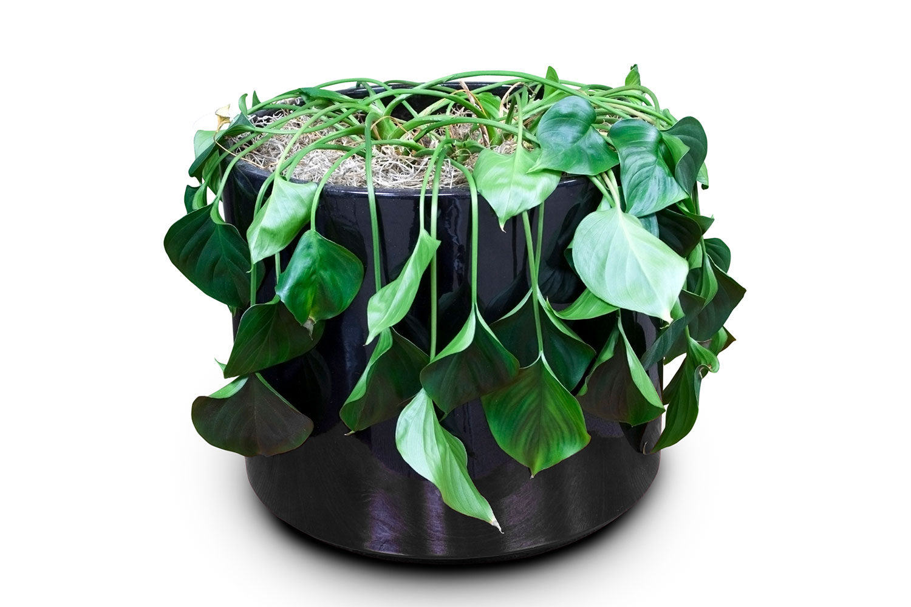
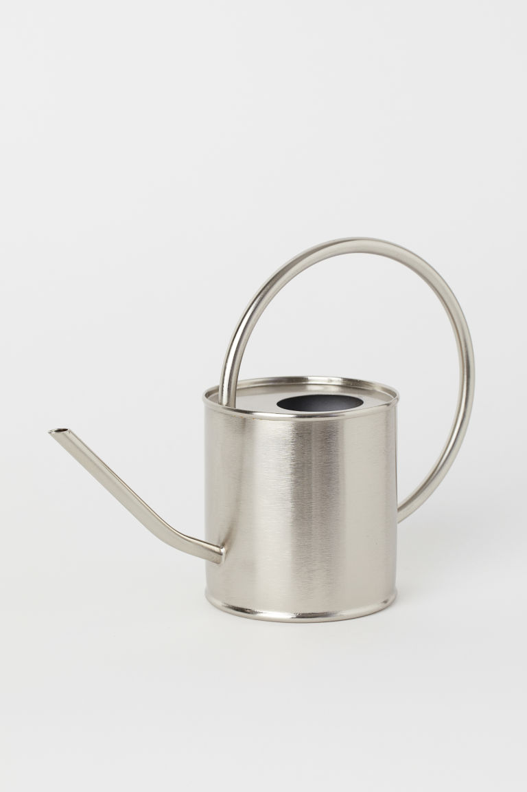

Plant Help
Questions
- Why is my plant dying?
- How do I re-pot my plant?
- What is a plant that I cant kill?


Answers
- Water. Water. Water. Overwatering and underwatering are the main factors of plants dying. Research the plant you have and how often it shoud be watered. Succulents for example do not require frequent watering.
- It is reccomended to re-pot your plant into a pot larger than the current pot. Carefully remove the plant at its roots. Place the root ball in the new pot with a layer of new soil at the bottom. Gently add more soil to surround the roots.
- The platnts that I have personally had the most luck with have been ZZ plants and Pothos. ZZ seem to require the least amount of care yet still produce new growth. Pothos are a great vining plant and put out rapid new growth with good care.